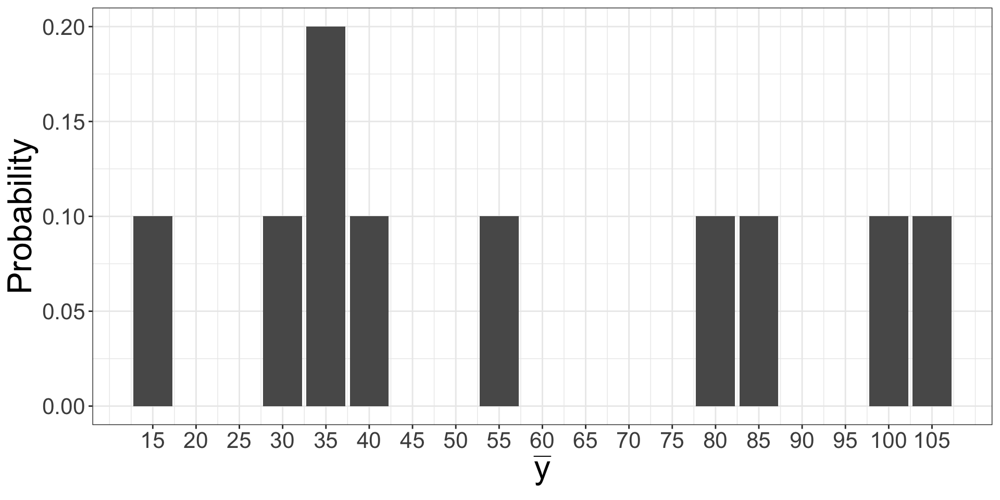
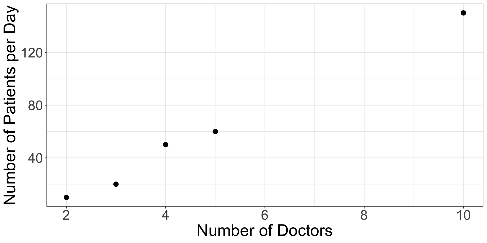

PUBHBIO 7225 Lecture 3
Topics
Sampling Distributions
Creating sampling distributions
Calculating expectation and variance
Activities
Readings
Assignments
Sampling distribution of a statistic = the distribution of different values of a statistic obtained from all possible samples from the population
A sampling distribution is a discrete probability distribution
For a given sampling design, each statistic (mean, total, proportion, etc.) has a sampling distribution
In your previous statistics classes, you usually assumed a sample of size \(n\) from an infinite population – hence sampling distributions such as \(\bar{x}\sim N(\mu, \sigma^2/n)\)
With a finite population, the sampling distribution takes a different form
Notation
\(N\) = size of the finite population \((N < \infty)\)
\(n\) = sample size
\(\hat{\theta}\) = statistic for which you want the sampling distribution (e.g., \(\hat{\theta}=\bar{y}\))
Suppose there are \(N=5\) clinics in a town and you want to estimate the average number of patients seen in a day (in the town)
The population of clinics is:
| Clinic ID: | 1 | 2 | 3 | 4 | 5 |
| Number of Doctors: | 2 | 3 | 4 | 5 | 10 |
| Number of Patients Seen in a Day (\(y\)) | 10 | 20 | 50 | 60 | 150 |
True mean # of patients = \((10+20+50+60+150)/5 = 58\)
Number of doctors – we know in advance of the survey (i.e., its on the sampling frame)
Number of patients seen per day – we don’t know until we take a sample (and then we will only know it for the sampled units)
Suppose we only have enough money to sample \(n=2\) of the \(N=5\) clinics
Statistic for which we want the sampling distribution = \(\hat{\theta}= \bar{y}\) = mean # patients from sample of \(n=2\) clinics
There are lots of ways we could select \(n=2\) clinics from the population of \(N=5\). Consider two options:
| Clinics | Probability |
|---|---|
| 1, 2 | 0.1 |
| 1, 3 | 0.1 |
| 1, 4 | 0.1 |
| 1, 5 | 0.1 |
| 2, 3 | 0.1 |
| 2, 4 | 0.1 |
| 2, 5 | 0.1 |
| 3, 4 | 0.1 |
| 3, 5 | 0.1 |
| 4, 5 | 0.1 |
| Clinics | Probability | Clinics | Probability | Clinics | Probability |
|---|---|---|---|---|---|
| 1, 1 | 0.04 | 3, 1 | 0.04 | 5, 1 | 0.04 |
| 1, 2 | 0.04 | 3, 2 | 0.04 | 5, 2 | 0.04 |
| 1, 3 | 0.04 | 3, 3 | 0.04 | 5, 3 | 0.04 |
| 1, 4 | 0.04 | 3, 4 | 0.04 | 5, 4 | 0.04 |
| 1, 5 | 0.04 | 3, 5 | 0.04 | 5, 5 | 0.04 |
| 2, 1 | 0.04 | 4, 1 | 0.04 | ||
| 2, 2 | 0.04 | 4, 2 | 0.04 | ||
| 2, 3 | 0.04 | 4, 3 | 0.04 | ||
| 2, 4 | 0.04 | 4, 4 | 0.04 | ||
| 2, 5 | 0.04 | 4, 5 | 0.04 |
For both schemes (designs), the probability of selection is equal for every pair of units
Can you name these two sampling schemes?
Without actually writing out all the possible samples, we can use math tools to calculate the number of possible samples for each of these designs (SRSWR, SRS)
With replacement: (Exponentiation)
Total number of outcomes when repeating an experiment with \(N\) outcomes \(n\) times is \(N^n\)
Without replacement: (Combination)
Total number of different ways to pick \(n\) subjects out of \(N\) subjects without regard to order is \(\displaystyle{_NC_n} = \binom{N}{n} = \text{``$N$ choose $n$"} = \frac{N!}{n!(N-n)!}\)
Thus for sampling \(n=2\) clinics from population of \(N=5\) clinics:
SRSWR: # possible samples = \(N^n = 5^2 = 25\)
SRS: # possible samples = \(\binom{N}{n} = \binom{5}{2} = \frac{5!}{2! (5-2)!} = \frac{120}{2 \times 6} = \frac{120}{12} = 10\)
Selection Probability = the probability of a unit being sampled (ending up in our sample) under a specific sampling design
Selection probabilities are a crucial/critical part of probability sampling!
We need them to draw a random sample under a given design, and we also need them to obtain unbiased estimates for population quantities using a single sample
Let’s calculate the selection probabilities for each of our designs, SRSWR and SRS
Sampling design: SRSWR of size \(n=2\) from a population of size \(N=5\).
Define:
A = Unit (clinic) 1 is randomly selected on the first draw
B = Unit (clinic) 1 is randomly selected on the second draw
Since this is SRSWR, each time we pick a clinic we “put it back”
Thus \(P(A) = P(B) = 1/N = 1/5 = 0.2\)
Selection probability = Probability that unit (clinic) 1 is selected into the sample
\[\begin{aligned} P(\text{Unit 1 in sample}) &{}= P(\text{selected on 1st draw OR selected on 2nd draw})\\ &{}= P(A \cup B) \quad\qquad\qquad\qquad\qquad\qquad \text{(union)}\\ &{}= P(A) + P(B) - P(A \cap B) \qquad\qquad \text{(addition rule)} \\ &{}= P(A) + P(B) - P(A) \times P(B) \qquad \text{(A and B are independent)} \\ &{}= 0.2 + 0.2 - 0.2 \times 0.2 = \mathbf{0.36} \end{aligned}\]
For a review of these probability rules, see handout on Carmen.
Now suppose we are taking a simple random sample WITHOUT replacement (SRS) of size \(n=2\) from a population of size \(N=5\).
A = Unit (clinic) 1 is randomly selected on the first draw
B = Unit (clinic) 1 is randomly selected on the second draw
As before, \(P(A) = 1/5 = 0.2\) but \(P(B) \ne P(A)\) !
Why?
The probability of selection on 2nd draw depends on whether or not the unit was selected on 1st draw
We can, however, use the Law of Total Probability to calculate \(P(B)\): \[\begin{aligned} P(B) &{}= P(B|A) \times P(A) + P(B|A^C) \times P(A^C) \\ &{} = P(\text{chosen on 2nd }|\text{ chosen on 1st}) \times P(\text{chosen on 1st}) \\ &{} \qquad + P(\text{chosen on 2nd }|\text{ NOT chosen on 1st}) \times P(\text{NOT chosen on 1st}) \end{aligned}\]
These are all quantities we know or can calculate!
Each of the pieces from the Law of Total Probability:
\(P(A) = P(\text{chosen on 1st}) = 0.2\)
\(P(A^C) = P(\text{NOT chosen on 1st}) = 1 - P(A) = 0.8\) (complement rule)
\(P(B|A) = P(\text{chosen on 2nd }|\text{ chosen on 1st}) = 0\) (sampling without replacement!)
\(P(B|A^C) = P(\text{chosen on 2nd }|\text{ NOT chosen on 1st}) = 1/4\)
Putting these pieces all together gives us \(P(B) = P(\text{Unit 1 selected on 2nd draw})\)
We want to know the probability that unit (clinic) 1 is selected into the sample: \[\begin{aligned} P(\text{Unit 1 in sample}) &{}= P(\text{selected on 1st draw OR selected on 2nd draw}) \\ &{}= P(A \cup B) \quad\qquad\qquad\qquad\qquad\qquad \text{(union)}\\ &{}= P(A) + P(B) - \underbrace{P(A \cap B)}_{=0 \text{(why??)}} \qquad\qquad \text{(addition rule)} \\ &{}= 0.2 + 0.2 - 0 = \mathbf{0.4} \end{aligned}\]
Sampling Cats (Part 1)
SRS of size \(n=2\) from a population of size \(N=5\).
Population values:
| Clinic: | 1 | 2 | 3 | 4 | 5 |
| # Patients per day (\(y\)): | 10 | 20 | 50 | 60 | 150 |
This is the sampling distribution of \(\hat{\theta}\) (i.e., \(\bar{y}\))! →
Average for each sample:
| Clinics Sampled | Probability | \(y\) values | \(\hat{\theta}=\bar{y}\) |
|---|---|---|---|
| 1, 2 | 1/10 | 10, 20 | 15 |
| 1, 3 | 1/10 | 10, 50 | 30 |
| 1, 4 | 1/10 | 10, 60 | 35 |
| 1, 5 | 1/10 | 10, 150 | 80 |
| 2, 3 | 1/10 | 20, 50 | 35 |
| 2, 4 | 1/10 | 20, 60 | 40 |
| 2, 5 | 1/10 | 20, 150 | 85 |
| 3, 4 | 1/10 | 50, 60 | 55 |
| 3, 5 | 1/10 | 50, 150 | 100 |
| 4, 5 | 1/10 | 60, 150 | 105 |
Notice that one value of \(\hat{\theta}\) (35) appears twice – so the sampling distribution is:
PMF:
| \(\hat{\theta}=\bar{y}\) | Probability |
|---|---|
| 15 | 0.1 |
| 30 | 0.1 |
| 35 | 0.2 |
| 40 | 0.1 |
| 55 | 0.1 |
| 80 | 0.1 |
| 85 | 0.1 |
| 100 | 0.1 |
| 105 | 0.1 |
Graph:

\[\begin{aligned} E(\bar{y}) &= \sum_k k P(\bar{y}=k) \\ &= 15 \times 0.1 ~ + ~ 30 \times 0.1 ~ + ~ 25 \times 0.2 ~ + \cdots + ~ 105 \times 0.1\\ &= \mathbf{58}= \text{true population mean} \end{aligned}\]
Under the SRS sampling scheme, \(\bar{y}\) is an unbiased estimate of mean of \(y\)
Though, notice that no sample actually produces the true mean! (look back at the sampling distribution…)
\[\begin{aligned} V(\bar{y}) &= \sum_k (k-E(\bar{y}))^2 P(\bar{y}=k) \\ & = (15-58)^2 \times 0.1 + (30-58)^2 \times 0.1 + \cdots + (105-58)^2 \times 0.1 = \mathbf{921} \end{aligned}\]
Note that we did not make any assumption about the distribution of the \(\mathbf{y}\) values – the “randomness” is from the sampling scheme, the fact that a different sample will produce a different value of \(\bar{y}\).
This is called design-based inference.
Consider the following alternative sampling scheme:
| Clinics | Probability |
|---|---|
| 1, 5 | 0.25 |
| 2, 5 | 0.25 |
| 3, 5 | 0.25 |
| 4, 5 | 0.25 |
In this scheme, clinic 5 is always sampled.
Clinic 5 is called a certainty unit \(\rightarrow P(\text{clinic 5 is sampled}) = 1\)
Because of this, not all units are selected with equal probability
Thus the simple unweighted mean \((\bar{y})\) in each sample is not a good estimate of the population mean! (Why?)
Can you come up with a way to estimate the mean?
(hint: each clinic 1-4 “represents” 4 clinics, and the 5th is itself…)
A reasonable estimator for the population mean under this sampling scheme is:
\(\hat{\theta}_i = (4 y_i + y_5)/5\) for \(i = 1, 2, 3, 4\)
Whichever clinic is sampled (in addition to clinic 5) “represents” all 4 other units
| Clinics Sampled | Probability | \(y\) values | \(\hat{\theta}\) |
|---|---|---|---|
| 1, 5 | 0.25 | 10, 150 | (4*10 + 150)/5 = 38 |
| 2, 5 | 0.25 | 20, 150 | (4*20 + 150)/5 = 46 |
| 3, 5 | 0.25 | 50, 150 | (4*50 + 150)/5 = 70 |
| 4, 5 | 0.25 | 60, 150 | (4*60 + 150)/5 = 78 |
\(E(\hat{\theta}) = \sum_k k P(\hat{\theta}=k) = 38 \times 0.25 + 46 \times 0.25 + 70 \times 0.25 + 78 \times 0.25 = \mathbf{58}\)
\(V(\hat{\theta}) = \sum_k (k-E(\hat{\theta}))^2 P(\hat{\theta}=k) = (38-58)^2 \times 0.25 + \cdots + (78-58)^2 \times 0.25 = \mathbf{272}\)

This auxiliary data – the number of doctors at each clinic – can help create a more efficient sampling scheme.
The idea of creating more efficient sampling designs using auxiliary information will come up repeatedly in this course.
Sometimes, we might prefer to allow a little bias in trade-off for much reduced variance
Thus we often use another measure of the “accuracy” of an estimator:
Mean Squared Error (MSE): \[MSE(\hat{\theta}) = E[(\hat{\theta}-\theta)^2] = V(\hat{\theta}) + [\text{Bias}(\hat{\theta})]^2\]
We describe estimators as:
Unbiased if \(E[\hat{\theta}] = \theta\)
Precise if \(V(\hat{\theta})\) is small
Accurate if \(MSE\) is small
An estimator can be biased and precise – but then its not accurate
MSE vs Variance: MSE measures how close an estimate is to the truth, while variance measures how close estimates are across different samples
Sampling Cats (Part 2)
PUBHBIO 7225